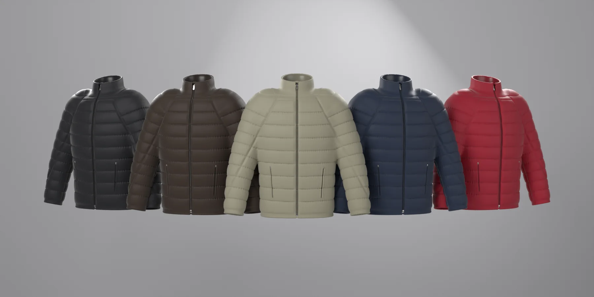
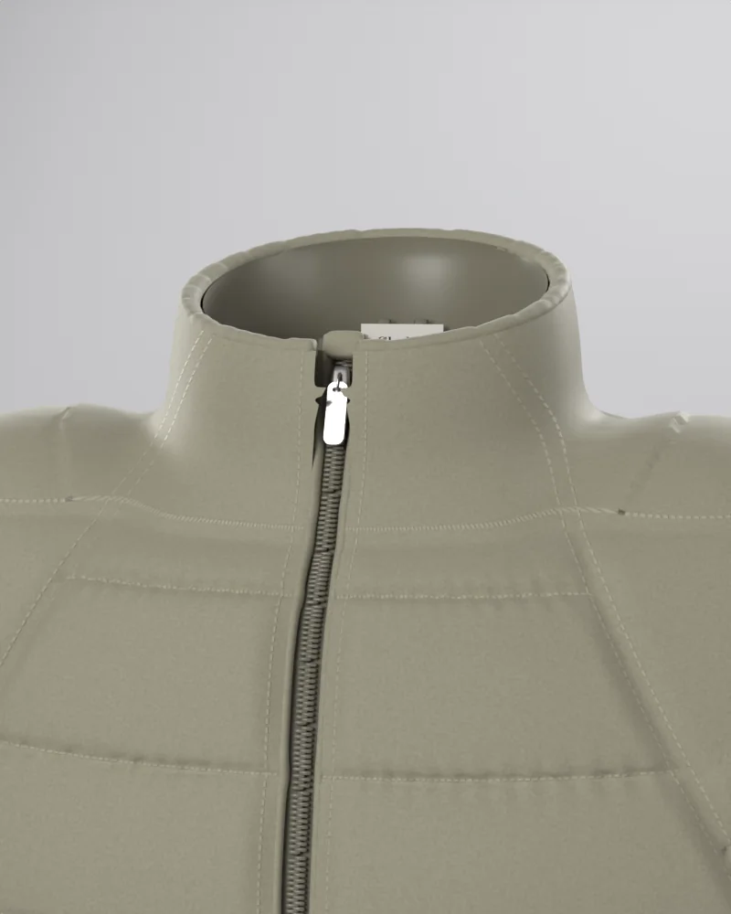
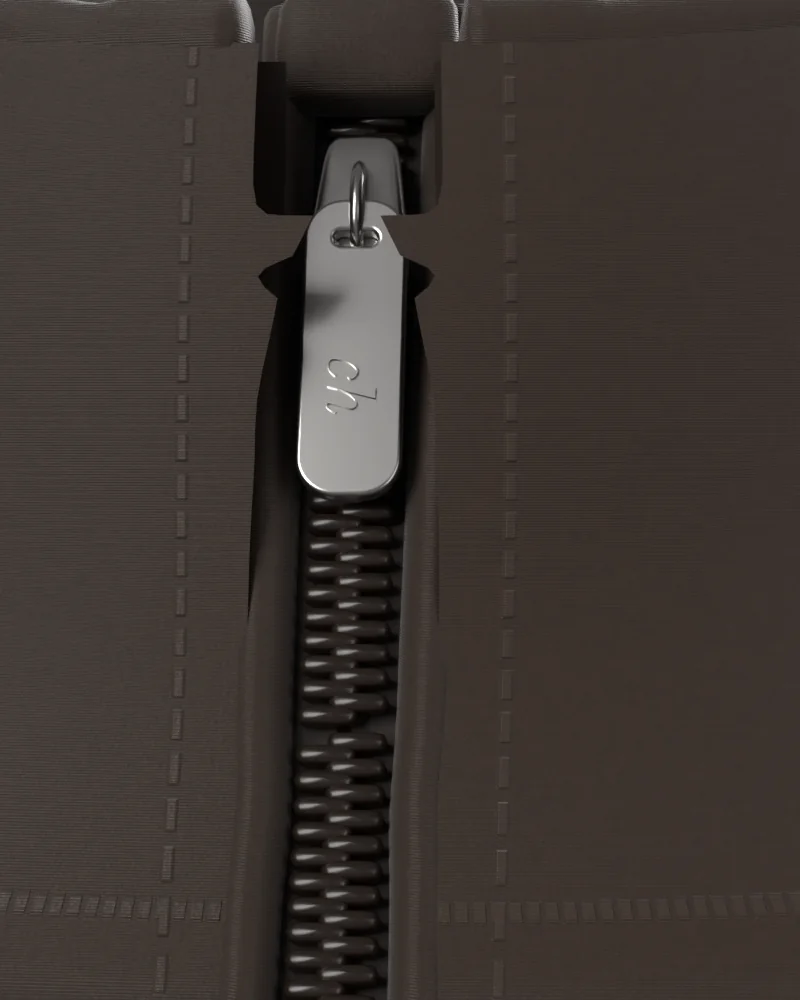
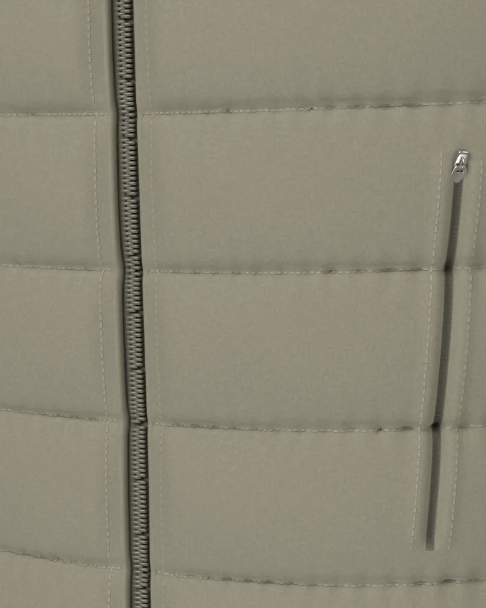
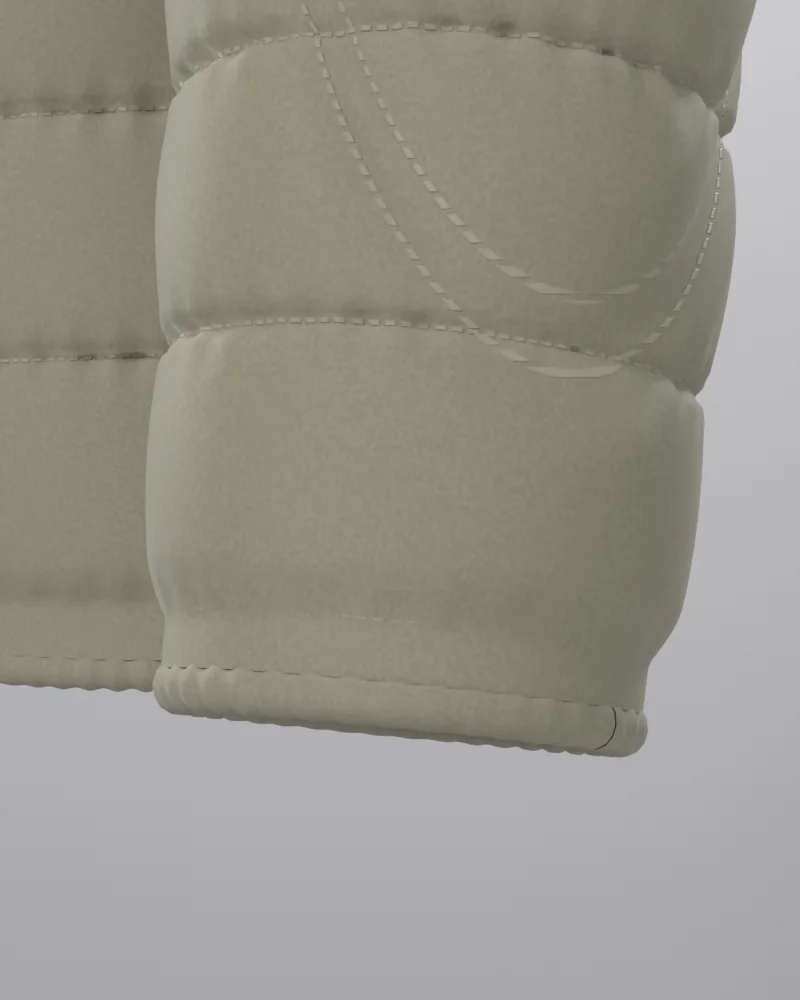
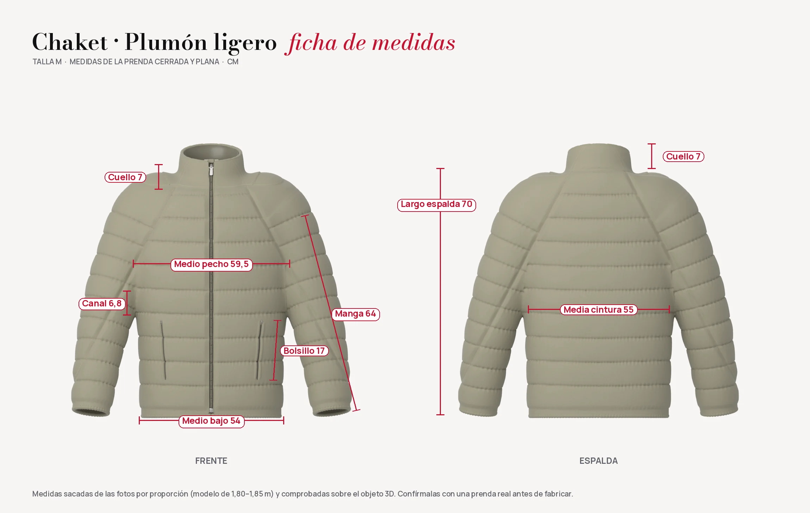

Colección 2026 · Chaket Plumón ligero
Plumón ligero, en cinco colores
La chaqueta de la tienda convertida en un objeto 3D: cuello alto, manga raglán, canales horizontales y bolsillos de cremallera oculta. Gírala, acércate, cambia el color y llévatela.
Arrastra para girar · rueda o pellizco para acercar
La colección
Un diseño, cinco colores
Verde salvia, café, azul marino, negro y el rojo de Chaket. Toca uno para verlo en el visor.

De cerca
Hecha con todos los detalles
Cada pespunte, la espiral de la cremallera y el frunce de los elásticos están modelados, no pintados.

Cuello y cremalleraCuello de 7 cm, cremallera de espiral hasta arriba con garaje y etiqueta tejida dentro. 
Tirador «ch»Deslizador metálico satinado y tirador con ranura y el monograma de la marca en relieve. 
Bolsillos ocultosDos bolsillos de 17 cm con la cremallera escondida en la ranura y pespunte a cada lado. 
Puño elásticoRibete elástico fruncido en puños y bajo: abriga sin apretar.
Ficha técnica
Las medidas de la talla M
Medidas de la prenda cerrada y plana, comprobadas sobre el objeto 3D.

| Medida | Talla M |
|---|---|
| Largo de espalda (del cuello al bajo) | 70 cm |
| Medio pecho (de axila a axila) | 59,5 cm |
| Medio contorno de cintura | 55 cm |
| Medio bajo (con el elástico) | 54 cm |
| Largo de manga (del hombro al puño) | 64 cm |
| Medio contorno del brazo | 27,5 cm |
| Medio puño | 19 cm |
| Alto del cuello | 7 cm |
| Alto de cada canal (cuerpo / manga) | 6,8 / 6 cm |
| Bolsillos de cremallera oculta | 17 cm |
- Corte
- Recto y a la cadera, manga raglán (sin costura en el hombro), cuello alto.
- Acolchado
- Nueve canales horizontales delante y detrás; en las mangas, anillos de 6 cm. El canesú del hombro es liso.
- Cierre
- Cremallera de espiral hasta el canto del cuello, con garaje arriba, tope abajo y tirador metálico «ch».
- Bolsillos
- Dos bolsillos delanteros de cremallera oculta, casi verticales.
- Acabados
- Ribete elástico en bajo y puños, forro satinado del mismo tono, etiqueta tejida y colgador en el cuello.
Las demás tallas cambian unos 2 cm de pecho y 1,5 cm de largo por talla.
Modelos 3D
Los cinco archivos GLB
Listos para la web (three.js, model-viewer), Blender o cualquier visor 3D. Cada uno pesa unos 5 MB y lleva sus texturas dentro.